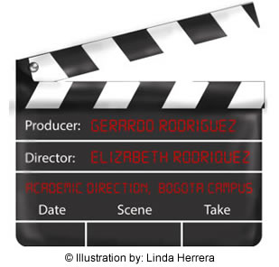

TÉRMINOS DE USO
7th @rt: The Power of Films to Learn English es una herramienta de la Universidad Nacional de Colombia creada para apoyar el aprendizaje autónomo del inglés como lengua extranjera, disponible para sus estudiantes de pregrado y posgrado y personal docente.
Los siguientes son los términos de uso de esta herramienta. Si usted no está de acuerdo con estos términos, absténgase de utilizar este sitio.
Propiedad intelectual
Los textos, imágenes, ilustraciones, material multimedia y audiovisual, interfaz, software, bases de datos y demás contenidos incluidos en esta página son propiedad de la Universidad Nacional de Colombia. Bajo ninguna circunstancia los contenidos en este sitio podrán ser usados con fines comerciales, y su reproducción parcial o total en cualquier publicación impresa, electrónica y/o cualquier otro medio está prohibida, a menos que cuente con autorización previa y expresa de la Universidad Nacional de Colombia.
Cuentas de Usuario
Para acceder a 7th @rt usted debe ser un usuario registrado de la Universidad Nacional de Colombia. Sus credenciales de usuario corresponden al usuario y contraseña de su correo electrónico institucional. Si tiene problemas para acceder, contacte a la Mesa de Ayuda de la Dirección Nacional de Informática y Comunicaciones. Tel. 3165000 ext. 81000, correo electrónico: mesadeayuda@unal.edu.co, vía Web.
Las cuentas de usuario de 7th @rt se eliminarán automáticamente luego de 3 meses de inactividad. Los usuarios también pueden eliminar su cuenta en cualquier momento.
Seguridad
Si usted es un usuario registrado como docente, estudiante tiene la obligación de mantener la seguridad de su clave y nombre de usuario. Los usuarios registrados no deben permitir que terceros accedan a 7th @rt con sus credenciales de usuario. El usuario es el único responsable por las consecuencias que pueda tener el mal manejo de su cuenta, como la publicación de su nombre de usuario y contraseña, y/o cualquier infracción a los términos de uso de esta página o a las leyes de derechos de autor.
Código de Conducta (Wall)
Tenga en cuenta que como usuario de 7th @rt usted no debe:
- Compartir contraseñas ni ningún otro tipo de información personal con otros usuarios a través de 7th @rt.
- Publicar comentarios, audios e imágenes que no correspondan a la naturaleza de las actividades planteadas en 7th @rt, o que atenten contra la buena imagen de otros usuarios y/o terceros.
- Atentar contra la libertad de expresión respetando las diferentes opiniones y diversidad que los usuarios puedan tener.
Privacidad
La herramienta 7th @rt tiene acceso a su nombre completo y correo electrónico.
Software
La Universidad Nacional de Colombia ha desarrollado este sitio con una filosofía de Software Libre y se encuentra soportado por las siguientes herramientas:
- Linux
- Apache
- PHP
- JavaScript
- MySQL
Quejas y comentarios
Sus comentarios y sugerencias son bienvenidos en la dirección 7thart_bog@unal.edu.co
© Universidad Nacional de Colombia
El formato para citar los contenidos de esta página es:
